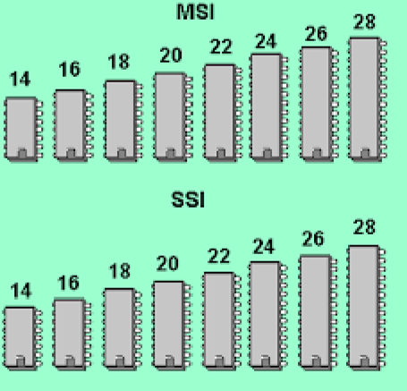
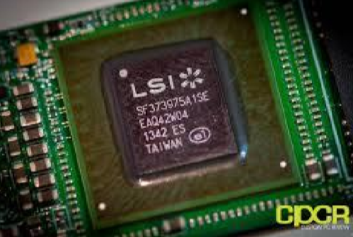

MSI (Médium Scale Integration): Esta escala comprende todos aquellos integrados cuyo número de puertas oscila entre 12 y 100 puertas. Es común en sumadores, multiplexores, etc. Estos integrados son los que se usaban en los primeros ordenadores aparecidos hacia 1970.
La existencia de muchos sistemas digitales complejos normalizados tales como contadores, multiplexores, decodificadores, etc., ha permitido su diseño en circuito integrado y produjo la aparición de la escala de integración media (MSI). bajo esta denominación se incluyen aquellos circuitos integrados que contienen de 100 a 1000 componentes, equivalentes aproximadamente a 10 y 100 puertas lógicas respectivamente.
LSI (Large Scale Integration): A esta escala pertenecen todos aquellos integrados que contienen más de 100 puertas lógicas (lo cual con lleva unos 1000 componentes integrados individualmente), hasta las mil puertas. Estos integrados realizan una función completa, como es el caso de las operaciones esenciales de una calculadora o el almacenamiento de una gran cantidad de bits.
El desarrollo combinado de la teoría de los bloques funcionales y de las técnicas microelectrónicas condujo a los circuitos de gran escala de integración (LSI), que poseen un número de puertas comprendido entre 100 y 1000, y dio lugar al nacimiento del microprocesador.
